R9: Exploratory Factor Analysis (EFA)
from PCA to EFA
Both Principal Component Analysis (PCA) and Factor Analysis (FA) are methods of getting at the dimensions that capture “variability” in the data.
It’s important to think about what we mean by “variability” here - it is variability across a whole set of variables. So if we start with just 3 variables, we can think of all the data visualised in 3-dimensional space (as in Figure 1). We can see in Figure 1 that the observations vary in all variables. But they vary in a specific way - observations that are high on y1 tend to be high on y2, and also high on y3. Observations that are lower, tend to be lower on all of them.
The methods we are looking at now are concerned with capturing this variability in fewer “dimensions”. I.e., without having to refer to all variables y1, y2, and y3, couldn’t we instead simply say that an observation is “high/low on dimension X”.
Where Principal Component Analysis (PCA) aims to summarise a set of measured variables into a set of orthogonal (uncorrelated) dimensions, Factor Analysis (FA) is an explanatory tool, in that we are assuming that that the relationships between a set of measured variables can be explained by a number of underlying latent factors.
| Principal Component Analysis | Factor Analysis | |
|---|---|---|
| what it does | take a set of correlated variables, reduce to orthogonal dimensions that capture variability | take a set of correlated variables, ask what set of dimensions (not necessarily orthogonal!) explain variability |
| what the dimensions are | dimensions are referred to as “components” - they are simply “composites” and do not necessarily exist | dimensions are referred to as “factors”. They are assumed to be underlying latent variables that are the cause of why people have different scores on the observed variables |
| example | Socioeconomic status (SES) might be a composite measure of family income, parental education, etc. If my SES increases, that doesn’t mean my parents suddenly get more education (it’s the other way around) | Anxiety (the unmeasurable construct) is a latent factor. My underlying anxiety is what causes me to respond “strongly agree” to “I am often on edge” |
One way to think about this is to draw the two approaches in diagrammatic form, mapping the relationships between variables. There are conventions for these sort of diagrams:
- squares = variables we observe
- circles = variables we don’t observe
- single-headed arrows = regression paths (pointed at outcome)
- double-headed arrows = correlation
In the diagrams below, note how the directions of the arrows are different between PCA and FA - in PCA, each component \(C_i\) is the weighted combination of the observed variables \(y_1, ...,y_n\), whereas in FA, each measured variable \(y_i\) is seen as generated by some latent factor(s) \(F_i\) plus some unexplained variance \(u_i\).
PCA as a diagram
Note that the idea of a ‘composite’ requires us to use a special shape (the hexagon), but many people would just use a square.
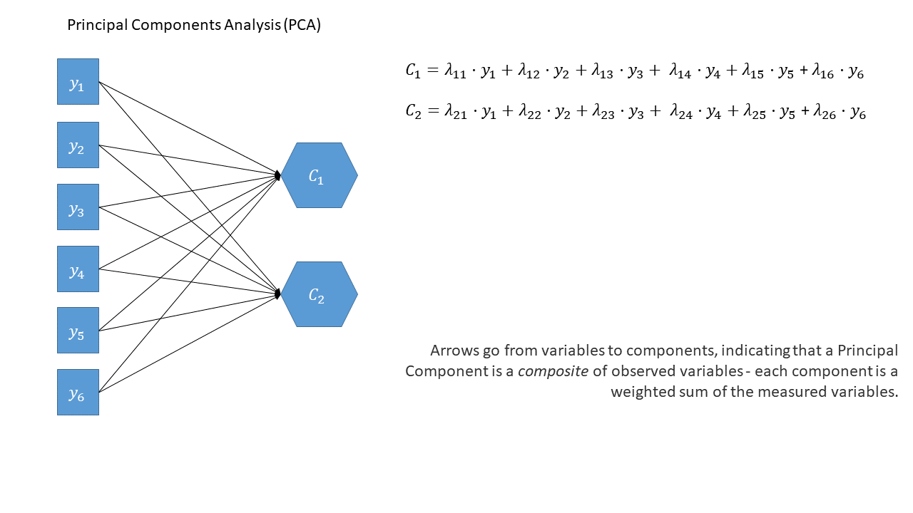
optional: PCA in full
Principal components sequentially capture the orthogonal (i.e., perpendicular) dimensions of the dataset with the most variance. The data reduction comes when we retain fewer components than we have dimensions in our original data. So if we were being pedantic, the diagram for PCA would look something like the diagram below.

EFA as a diagram
Exploratory Factor Analysis as a diagram has arrows going from the factors to the observed variables. Unlike PCA, we also have ‘uniqueness’ factors for each variable, representing the various stray causes that are specific to each variable. Sometimes, these uniqueness are represented by an arrow only, but they are technically themselves latent variables, and so can be drawn as circles.
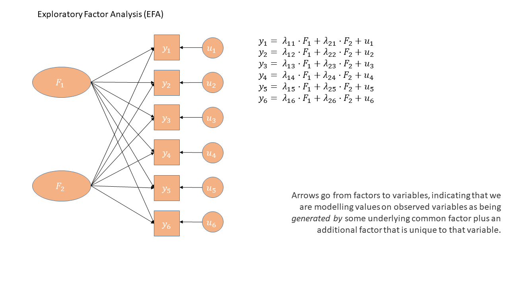
It might help to read the \(\lambda\)s as beta-weights (\(b\), or \(\beta\)), because that’s all they really are. The equation \(y_i = \lambda_{1i} F_1 + \lambda_{2i} F_2 + u_i\) is just our way of saying that the variable \(y_i\) is the manifestation of some amount (\(\lambda_{1i}\)) of an underlying factor \(F_1\), some amount (\(\lambda_{2i}\)) of some other underlying factor \(F_2\), and some error (\(u_i\)). It’s just a set of regressions!
Exploratory Factor Analysis
The “Exploratory” in Exploratory Factor Analysis reflects that we are not wanting to test a hypothesis about what the structure of the dimensions underlying our variables are.
Consider an example where we are interested in measuring “phone-attachment” (i.e. being addicted to your phone), and we make a questionnaire that asks 10 questions about how you feel when you don’t have your phone, what you are thinking when you automatically get it out of your pocket etc.
We might do exploratory factor analysis when we want to know if our set of 10 questions is “unidimensional”, or whether there is actually two (or more) “subdimensions” to the questionnaire.
Such a technique will help us better understand a) what exactly it is that we’ve measured, and b) how we can create composite score(s) (i.e. can we give everybody just 1 score, or should we really give people two scores for each subdimension?)
The process:
- check suitability of items
- examine plausible number of factors
- based on 2, choose the range to examine from \(n_{min}\) factors to \(n_{max}\) factors
- do EFA extracting from \(n_{min}\) to \(n_{max}\) factors. Compare each of these ‘solutions’ in terms of structure, variance explained, and — by examining how the factors from each solution relate to the observed items — assess how much theoretical sense they make.
Initial Checks
Dataset: phoneaddiction.csv
The dataset at https://uoepsy.github.io/data/phoneaddiction.csv comes from a (fake) study that is interested in developing a scale of “phone-attachment/addiction” - i.e., the idea of being overly attached to a phone.
We have a set of 10 statements (Table 1) that get at different aspects of this idea, and we asked 240 people to rate how much they agreed with each of the 10 statements on a 1-5 scale (1 = strongly disagree, 5 = strongly agree).
| variable | question |
|---|---|
| item1 | I often reach for my phone even when I don’t have a specific reason to use it. |
| item2 | I feel a strong urge to check my phone frequently, even during meals or social interactions. |
| item3 | I spend a large portion of my day using my phone, often for more hours than I intend. |
| item4 | My phone use has interfered with my ability to complete tasks or responsibilities at school, work, or home. |
| item5 | When I cannot use my phone (e.g., no battery or no signal), I feel anxious or uncomfortable. |
| item6 | My phone use has negatively affected my sleep schedule, such as staying up late scrolling. |
| item7 | I find it difficult to avoid checking my phone immediately upon waking up or right before bed. |
| item8 | I often check my phone even in situations where it’s distracting or socially inappropriate (e.g., meetings or classes). |
| item9 | I sometimes feel that others are overly concerned about my phone use in social situations. |
| item10 | I have tried to reduce my phone usage but find it challenging to do so. |
There are various ways of assessing the suitability of our items for exploratory factor analysis, and most of them rely on examining the observed correlations between items.
Look at the correlation matrix
Use a function such as cor or corr.test(data) (from the psych package) to create the correlation matrix. If it’s a big matrix (they get big quite quickly!) then we can make some sort of visual to get a better sense.
phoneaddiction.csv example:
Most of the correlations are in the range from 0.2 to 0.4. So they aren’t hugely strong correlations, but they are all related. From the plot below item9 already looks to be a weird one, which is something to keep in mind.
library(pheatmap)
pheatmap(cor(phdat), cluster_rows = F, cluster_cols = F)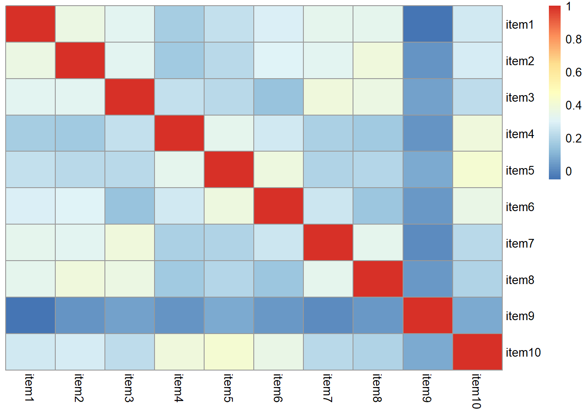
Bartlett’s Test
The function cortest.bartlett(cor(data), n = nrow(data)) conducts “Bartlett’s test”. This tests against the null that the correlation matrix is proportional to the identity matrix (a matrix of all 0s except for 1s on the diagonal).
- Null hypothesis: observed correlation matrix is equivalent to the identity matrix
- Alternative hypothesis: observed correlation matrix is not equivalent to the identity matrix.
What is the identity matrix?
The “Identity matrix” is a matrix of all 0s except for 1s on the diagonal.
e.g. for a 3x3 matrix:
\[
\begin{bmatrix}
1 & 0 & 0 \\
0 & 1 & 0 \\
0 & 0 & 1 \\
\end{bmatrix}
\] If a correlation matrix looks like this, then it means there is no shared variance between the items, so it is not suitable for factor analysis.
phoneaddiction.csv example:
The Bartlett test is significant here, meaning that we reject the null hypothesis that our correlation matrix is equivalent to the identity matrix.
This is a good thing - we want it to be different in order to justify doing factor analysis.
library(psych)
cortest.bartlett(cor(phdat))$chisq
[1] 165
$p.value
[1] 1.38e-15
$df
[1] 45
Kaiser, Meyer, Olkin Measure of Sampling Adequacy
You can check the “factorability” of the correlation matrix using KMO(data) (also from psych!).
- Rules of thumb:
- \(0.8 < MSA < 1\): the sampling is adequate
- \(MSA <0.6\): sampling is not adequate
- \(MSA \sim 0\): large partial correlations compared to the sum of correlations. Not good for FA
Kaiser’s suggested cuts
These are Kaiser’s corresponding adjectives suggested for each level of the KMO:
- 0.00 to 0.49 “unacceptable”
- 0.50 to 0.59 “miserable”
- 0.60 to 0.69 “mediocre”
- 0.70 to 0.79 “middling”
- 0.80 to 0.89 “meritorious”
- 0.90 to 1.00 “marvelous”
phoneaddiction.csv example:
Overall KMO is good here at 0.83, and individual item KMOs are also looking pretty ‘meritorious’ too! The only thorny one is item9, again!
library(psych)
KMO(phdat)Kaiser-Meyer-Olkin factor adequacy
Call: KMO(r = phdat)
Overall MSA = 0.83
MSA for each item =
item1 item2 item3 item4 item5 item6 item7 item8 item9 item10
0.86 0.85 0.83 0.82 0.83 0.81 0.85 0.83 0.53 0.82
Check for linearity
It also makes sense to check for linearity of relationships prior to conducting EFA. EFA is all based on correlations, which assume the relations we are capturing are linear.
You can check linearity of relations using pairs.panels(data) (also from psych), and you can view the histograms on the diagonals, allowing you to check univariate normality (which is usually a good enough proxy for multivariate normality).
phoneaddiction.csv example:
Because these items are measured on likert scales of 1-5, looking at scatterplots can be a bit harder. The red lines on the plots are essentially “smooth” lines, which follow the mean of the variable on the y-axis as it moves across the x-axis. So we want them to all be straight-ish, which they are. We can see from the diagonals of this plot that the items are all fairly normally distributed too.
library(psych)
pairs.panels(phdat)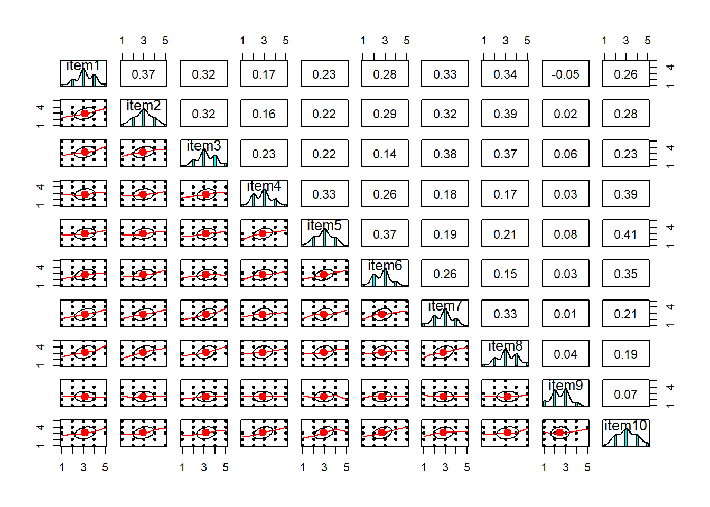
How many factors?
The question of how many factors to extract is very similar to the methods we had in PCA!
- Kaiser’s criterion
- Scree plots
- Minimum Average Partial (MAP)
- Parallel Analysis
phoneaddiction.csv example:
We won’t go through them all again here, so we’ll just tabulate the suggestions from each:
| method | suggestion |
|---|---|
| kaiser | 3 |
| scree plot | 1 or 2? or 5? quite hard to tell |
| MAP | 2 |
| parallel analysis | 2 |
From this I would say that it is worth considering both a 1 factor and a 2 factor solution.
Doing an EFA
The code to perform an EFA is very straightforward. It’s just one line:
library(psych)
my_efa <- fa(data, nfactors = ?? , rotate = ??, fm = ??)The first two things we’re giving the fa() function are straightforward - we give it the dataset and we tell it how many factors we want.
The latter two things - rotate and fm, are a bit more involved.
Rotations
When we apply a rotation to an EFA, we make it so that some loadings are smaller and some are higher - essentially creating a ‘simple structure’ (where each variable loads strongly on only one factor and weakly on all other factors). This structure simplifies the interpretation of factors, making them more distinct and easily understandable.
There are two types of rotations - “orthogonal” and “oblique”. Orthogonal rotations preserve the orthogonality of the factors (i.e. ensure they are uncorrelated, and therefore capturing completely distinct things). Oblique rotations allow the factors to be correlated and estimates that correlation (as indicated by the double headed arrow between them in the diagram below)
It’s pretty hard to find an intuition for “rotations” because they are a mathematical transformation applied to a matrix (and none of that is really ‘intuitive’). At the broadest level, think of a rotation as allowing the dimensions to no longer be perpendicular when viewed in the space of our observed variables.
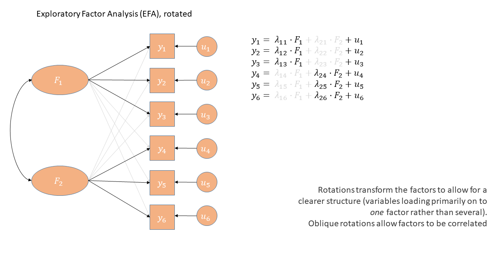
Factor Extraction Methods
PCA (using eigendecomposition) is itself a method of extracting the different dimensions from our data. However, there are lots more available for factor analysis.
You can find a lot of discussion about different methods both in the help documentation for the fa() function from the psych package, and there are lots of discussions both in papers and on forums.
As you can see, this is a complicated issue, but when you have a large sample size, a large number of variables, for which you have similar communalities, then the extraction methods tend to agree. For now, don’t fret too much about the factor extraction method.1
The main contenders are Maximum Likelihood (ml), Minimum Residuals (minres) and Principal Axis Factoring (paf).
Maximum Likelihood has the benefit of providing standard errors and fit indices that are useful for model testing, but the disadvantage is that it is sensitive to violations of normality, and can sometimes fail to converge, or produce solutions with impossible values such as factor loadings >1 (known as “Heywood cases”), or factor correlations >1.
Minimum Residuals (minres) and Principal Axis Factoring (paf) will both work even when maximum likelihood fails to converge, and are slightly less susceptible to deviations from normality. They are a bit more sensitive to the extent to which the items share variance with one another.
phoneaddiction.csv example:
In our context:
- if we are thinking that there might be 2 factors that underly our scale of ‘phone-addiction’, then we would probably expect those two factors to be correlated (all the questions are about phone usage, after all). For that reason, we are going to use an oblique rotation2
- as all of the correlations between individual items are low to medium (0.2 - 0.4), and the item distributions look fairly normal, we’re going to opt to use maximum likelihood here.
# 1 factor solution
ph_efa1 <- fa(phdat, nfactors = 1, rotate = "oblimin", fm = "ml")
# 2 factor solution
ph_efa2 <- fa(phdat, nfactors = 2, rotate = "oblimin", fm = "ml")The Output
We can simply print the name of our model in order to see a lot of information.
Below are a series of slides (the full deck as a .pdf is here if you want it) that step-by-step talk through each part of the output of an EFA.
Pattern Matrix
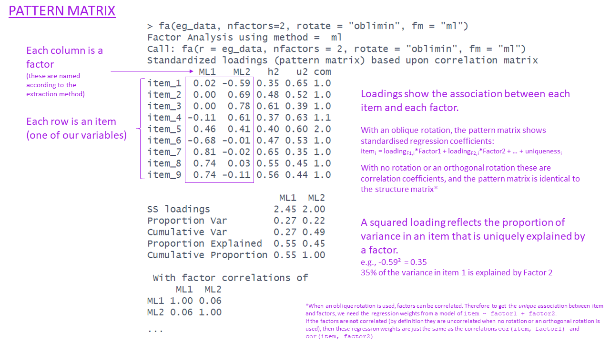
Communalities
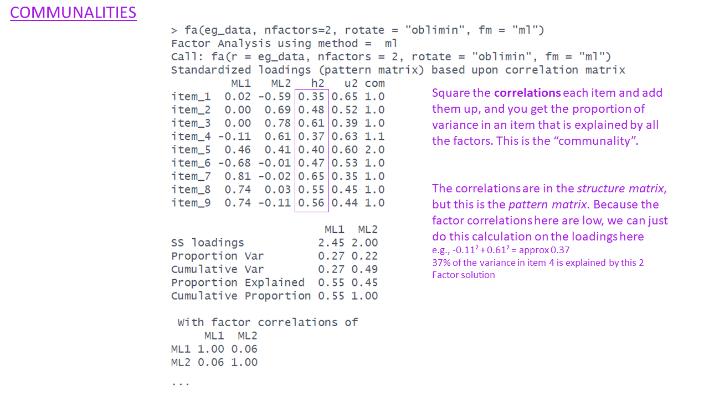
Uniqueness
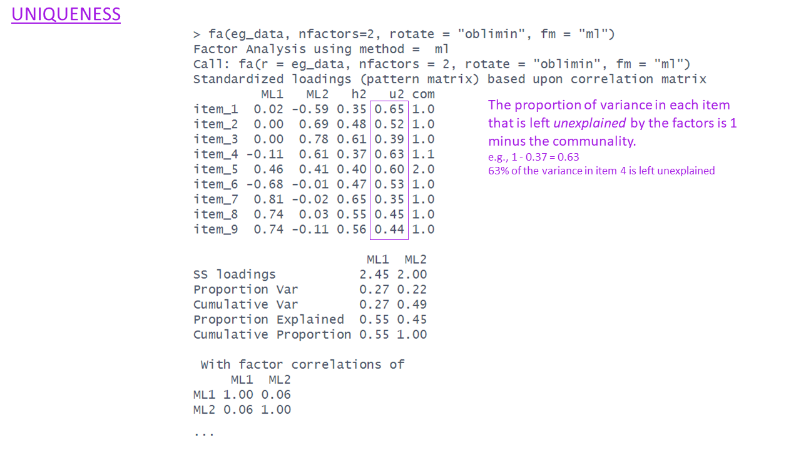
Complexities
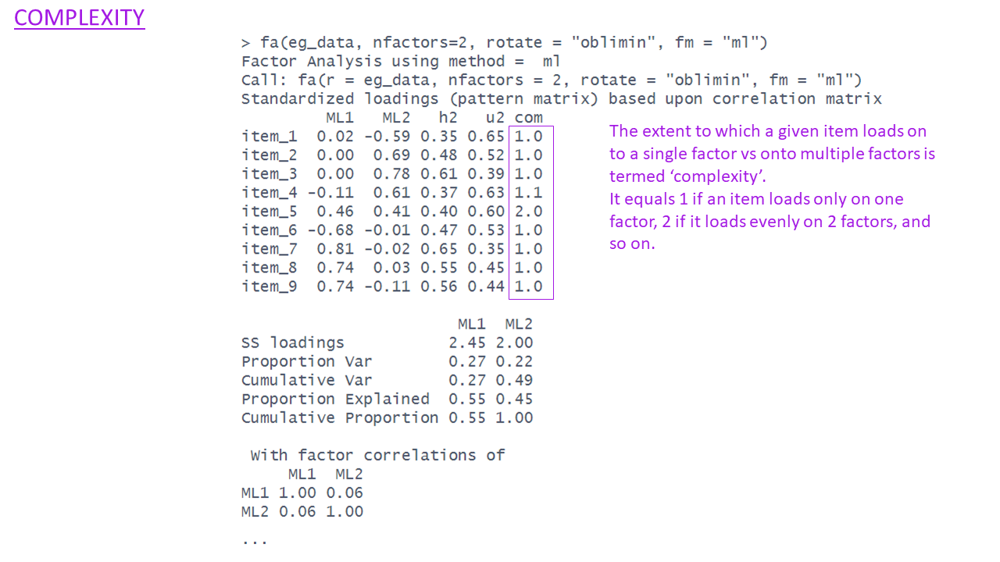
SS loadings & Variance Accounted for
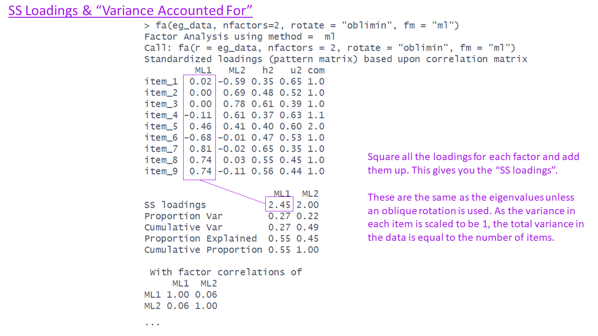
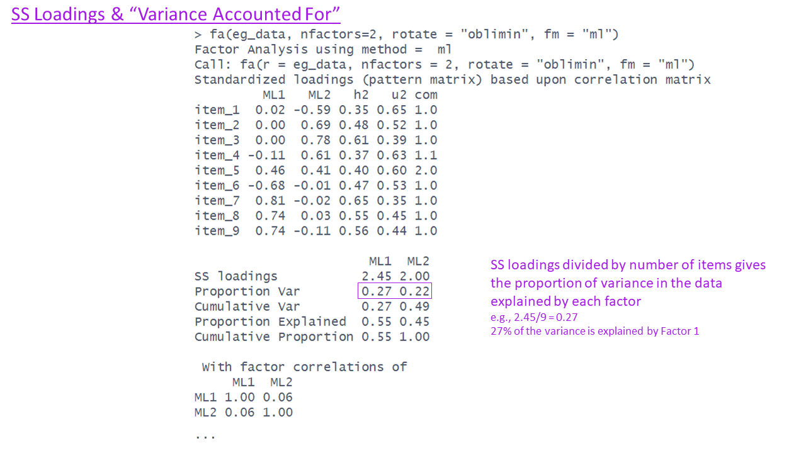
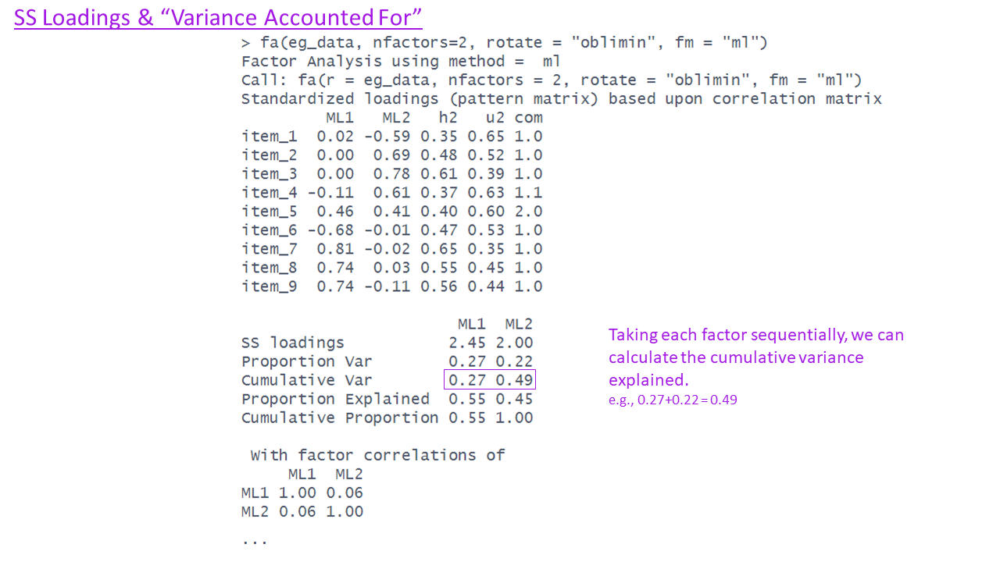
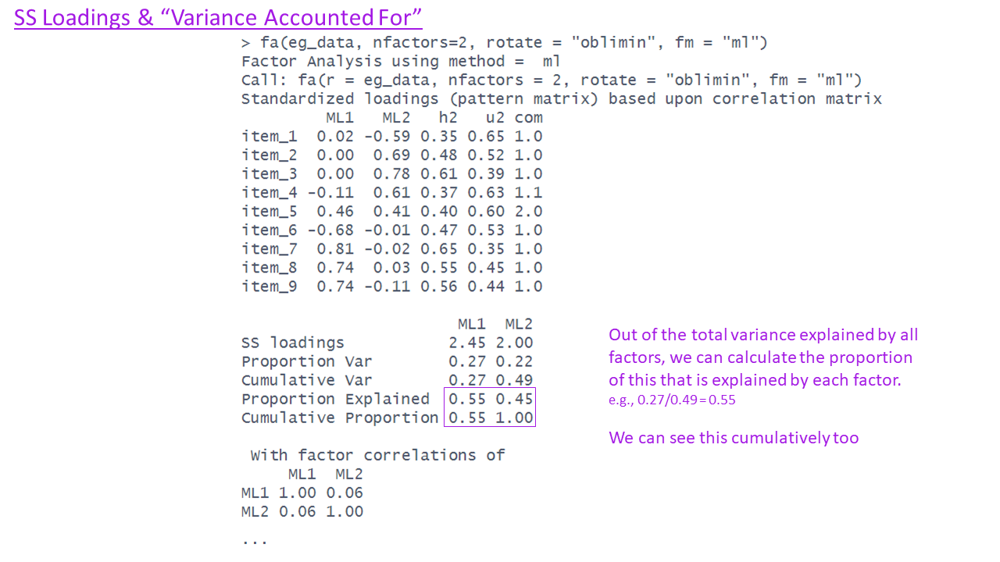
Factor Correlations
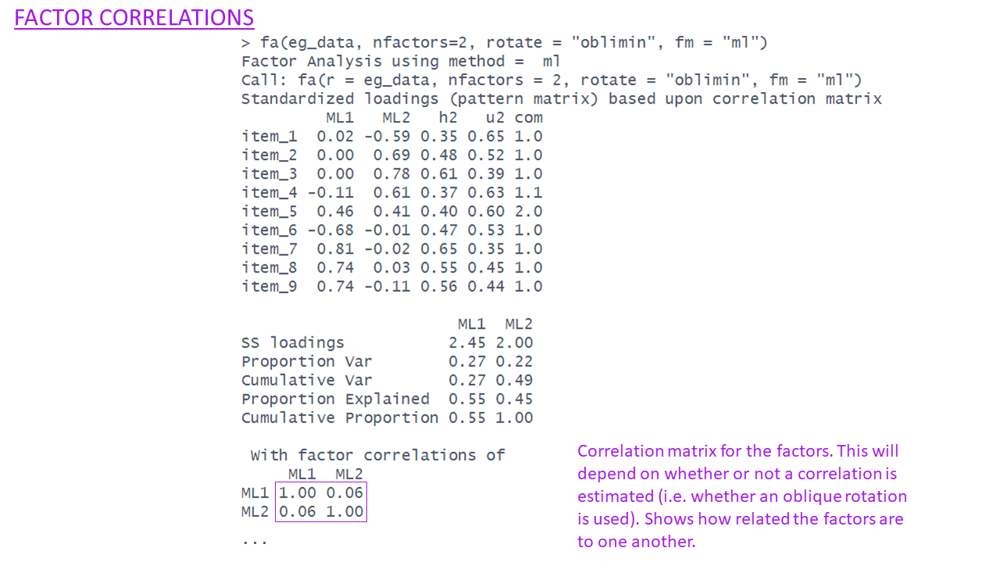
Optional Extras: Fit indices etc.
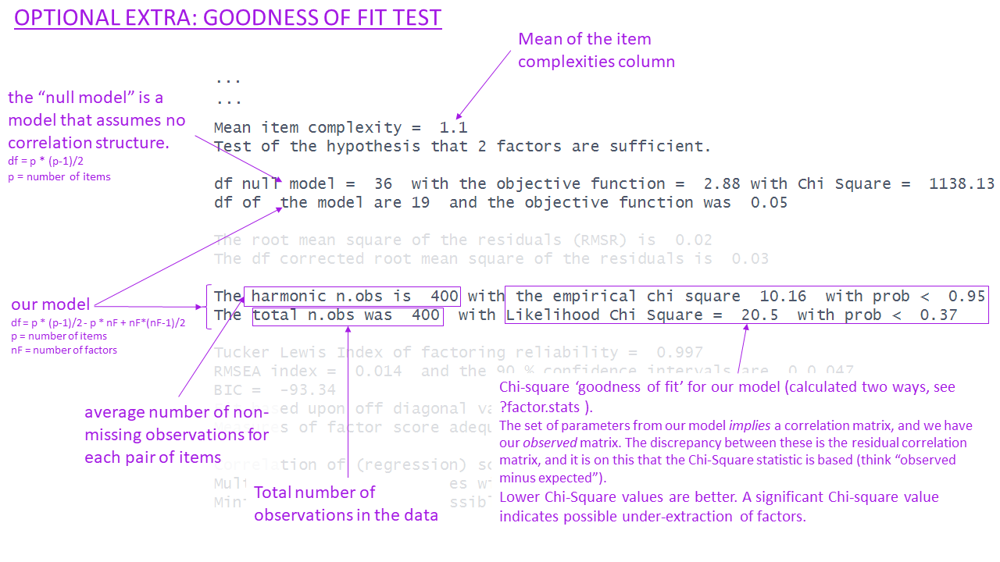
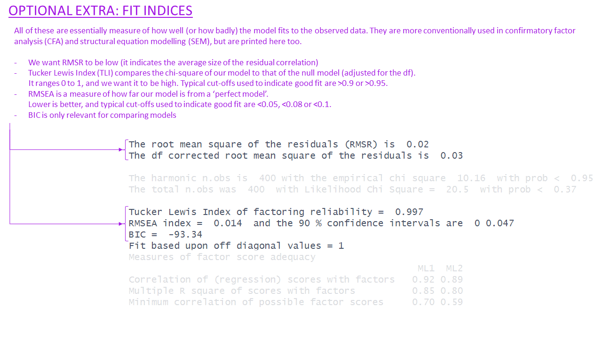
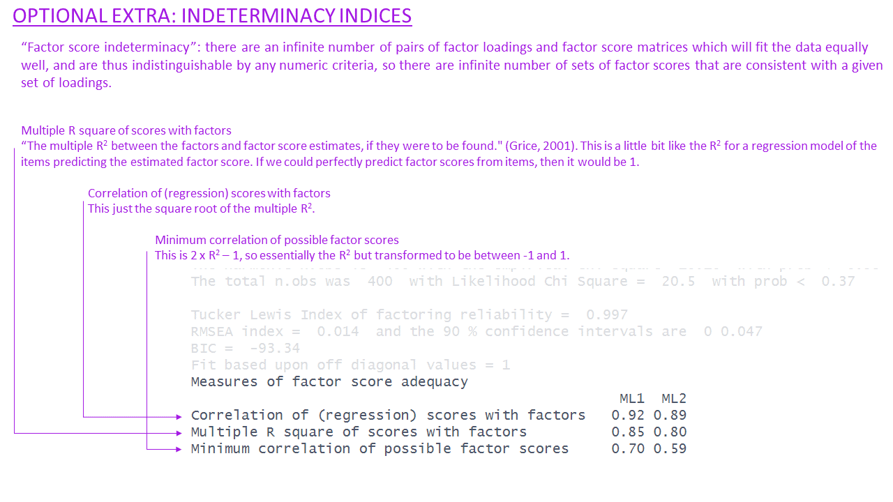
What makes a ‘good’ solution?
There are various sets of criteria proposed to set out what makes a certain factor solution “theoretically coherent”.
Ultimately, a big part of it is subjective, and based on what we know about the observed variables (e.g., if it’s a questionnaire, then our interpretation of the wording of each question is key here). However, there are some key things to consider that relate to the utility of a factor solution:
- how much variance is accounted for by a solution?
- this is a good starting point as it shows us an overall metric of how much the factor(s) are actually capturing something that is meaningfully shared between the items.
- more variance in the items explained by the solution is better, but more factors will always explain more variance.
- do all factors load on 3+ items at a salient level?
- we want our factors to be meaningful things that don’t simply represent the same thing as a single variable. If a factor has only 1 item that loads very highly on to it, and all other item loadings are small, then that factor is really just capturing a very similar thing to the observed item.
- we want our factors to be meaningful things that don’t simply represent the same thing as a single variable. If a factor has only 1 item that loads very highly on to it, and all other item loadings are small, then that factor is really just capturing a very similar thing to the observed item.
- do all items have at least one loading at a salient level?
- we want our solution to capture the full breadth of our scale - i.e. all aspects of our construct. So we ideally want each item to be related to at least one factor.
- depending on our purpose here, an item that doesn’t have a high loading could point us to look at the item in more detail, and think about why it is doing something different. If we are developing a scale then we may even decide that the item was badly worded, and we could drop it from the analysis and start over with the process on the subset of items.
- are there any highly complex items?
- we ideally want items to be linked mainly to one factor and not to others. Item complexity represents the extent to which they load across multiple factors. This isn’t necessarily a problem per se, but it can make it harder to define exactly what our factors represent.
- we ideally want items to be linked mainly to one factor and not to others. Item complexity represents the extent to which they load across multiple factors. This isn’t necessarily a problem per se, but it can make it harder to define exactly what our factors represent.
- are there any “Heywood cases” (communalities or standardised loadings that are >1)?
- this can happen if we use maximum likelihood as an estimation technique, and we should check for these because they reflect that the solution may fit well numerically, but make absolutely no sense (you can’t have correlations >1).
- this can happen if we use maximum likelihood as an estimation technique, and we should check for these because they reflect that the solution may fit well numerically, but make absolutely no sense (you can’t have correlations >1).
- is the factor structure (items that load on to each factor) coherent, and does it make theoretical sense?
- this is possibly the biggest question. Broadly speaking, it is asking “can you give a name to each factor?”. It requires us looking at the item wordings carefully and considering how they are grouped in loadings on to each factor. This is the fun bit!
phoneaddiction.csv example:
In the case of the phone-addiction questions, both solutions look reasonable apart from item 9 (which we could have guessed right at the beginning).
1 factor solution
ph_efa1Factor Analysis using method = ml
Call: fa(r = phdat, nfactors = 1, rotate = "oblimin", fm = "ml")
Standardized loadings (pattern matrix) based upon correlation matrix
ML1 h2 u2 com
item1 0.56 0.3129 0.69 1
item2 0.57 0.3291 0.67 1
item3 0.53 0.2797 0.72 1
item4 0.44 0.1929 0.81 1
item5 0.51 0.2614 0.74 1
item6 0.50 0.2506 0.75 1
item7 0.53 0.2820 0.72 1
item8 0.52 0.2689 0.73 1
item9 0.06 0.0033 1.00 1
item10 0.55 0.3000 0.70 1
ML1
SS loadings 2.48
Proportion Var 0.25
Mean item complexity = 1
Test of the hypothesis that 1 factor is sufficient.
df null model = 45 with the objective function = 1.74 with Chi Square = 408
df of the model are 35 and the objective function was 0.32
The root mean square of the residuals (RMSR) is 0.07
The df corrected root mean square of the residuals is 0.08
The harmonic n.obs is 240 with the empirical chi square 101 with prob < 2.7e-08
The total n.obs was 240 with Likelihood Chi Square = 75 with prob < 9.9e-05
Tucker Lewis Index of factoring reliability = 0.858
RMSEA index = 0.069 and the 90 % confidence intervals are 0.047 0.091
BIC = -117
Fit based upon off diagonal values = 0.93
Measures of factor score adequacy
ML1
Correlation of (regression) scores with factors 0.88
Multiple R square of scores with factors 0.78
Minimum correlation of possible factor scores 0.55
2 factor solution
ph_efa2Factor Analysis using method = ml
Call: fa(r = phdat, nfactors = 2, rotate = "oblimin", fm = "ml")
Standardized loadings (pattern matrix) based upon correlation matrix
ML1 ML2 h2 u2 com
item1 0.52 0.09 0.3347 0.67 1.1
item2 0.56 0.07 0.3612 0.64 1.0
item3 0.58 0.00 0.3380 0.66 1.0
item4 -0.01 0.54 0.2821 0.72 1.0
item5 -0.01 0.63 0.3933 0.61 1.0
item6 0.07 0.51 0.3092 0.69 1.0
item7 0.57 0.01 0.3311 0.67 1.0
item8 0.65 -0.08 0.3742 0.63 1.0
item9 -0.04 0.11 0.0093 0.99 1.3
item10 0.00 0.68 0.4554 0.54 1.0
ML1 ML2
SS loadings 1.71 1.47
Proportion Var 0.17 0.15
Cumulative Var 0.17 0.32
Proportion Explained 0.54 0.46
Cumulative Proportion 0.54 1.00
With factor correlations of
ML1 ML2
ML1 1.00 0.58
ML2 0.58 1.00
Mean item complexity = 1
Test of the hypothesis that 2 factors are sufficient.
df null model = 45 with the objective function = 1.74 with Chi Square = 408
df of the model are 26 and the objective function was 0.09
The root mean square of the residuals (RMSR) is 0.03
The df corrected root mean square of the residuals is 0.04
The harmonic n.obs is 240 with the empirical chi square 19.8 with prob < 0.8
The total n.obs was 240 with Likelihood Chi Square = 19.9 with prob < 0.8
Tucker Lewis Index of factoring reliability = 1.03
RMSEA index = 0 and the 90 % confidence intervals are 0 0.034
BIC = -123
Fit based upon off diagonal values = 0.99
Measures of factor score adequacy
ML1 ML2
Correlation of (regression) scores with factors 0.86 0.85
Multiple R square of scores with factors 0.75 0.73
Minimum correlation of possible factor scores 0.49 0.46Looking at item9, the wording is “I sometimes feel that others are overly concerned about my phone use in social situations.”. This maybe represents something slightly different from just “being addicted to your phone” - it also contains a self-consciousness / feeling judged by others etc, which is something completely different.
Removing item9, and doing the entire process over again, we end up still finding that it’s between a 1 or a 2 factor solution.
1 factor solution (excluding item 9)
ph_efa1a <- fa(phdat[,-9], nfactors = 1, rotate = "oblimin", fm = "ml")
ph_efa1aFactor Analysis using method = ml
Call: fa(r = phdat[, -9], nfactors = 1, rotate = "oblimin", fm = "ml")
Standardized loadings (pattern matrix) based upon correlation matrix
ML1 h2 u2 com
item1 0.56 0.32 0.68 1
item2 0.57 0.33 0.67 1
item3 0.53 0.28 0.72 1
item4 0.44 0.19 0.81 1
item5 0.51 0.26 0.74 1
item6 0.50 0.25 0.75 1
item7 0.53 0.28 0.72 1
item8 0.52 0.27 0.73 1
item10 0.55 0.30 0.70 1
ML1
SS loadings 2.48
Proportion Var 0.28
Mean item complexity = 1
Test of the hypothesis that 1 factor is sufficient.
df null model = 36 with the objective function = 1.72 with Chi Square = 404
df of the model are 27 and the objective function was 0.3
The root mean square of the residuals (RMSR) is 0.07
The df corrected root mean square of the residuals is 0.09
The harmonic n.obs is 240 with the empirical chi square 94.3 with prob < 2.1e-09
The total n.obs was 240 with Likelihood Chi Square = 70.7 with prob < 8.8e-06
Tucker Lewis Index of factoring reliability = 0.841
RMSEA index = 0.082 and the 90 % confidence intervals are 0.059 0.106
BIC = -77.2
Fit based upon off diagonal values = 0.93
Measures of factor score adequacy
ML1
Correlation of (regression) scores with factors 0.88
Multiple R square of scores with factors 0.78
Minimum correlation of possible factor scores 0.55
2 factor solution (excluding item 9)
ph_efa2a <- fa(phdat[,-9], nfactors = 2, rotate = "oblimin", fm = "ml")
ph_efa2aFactor Analysis using method = ml
Call: fa(r = phdat[, -9], nfactors = 2, rotate = "oblimin", fm = "ml")
Standardized loadings (pattern matrix) based upon correlation matrix
ML1 ML2 h2 u2 com
item1 0.52 0.10 0.33 0.67 1.1
item2 0.55 0.08 0.36 0.64 1.0
item3 0.58 0.00 0.34 0.66 1.0
item4 -0.01 0.54 0.28 0.72 1.0
item5 -0.01 0.63 0.39 0.61 1.0
item6 0.07 0.52 0.31 0.69 1.0
item7 0.57 0.01 0.33 0.67 1.0
item8 0.66 -0.08 0.38 0.62 1.0
item10 0.00 0.67 0.45 0.55 1.0
ML1 ML2
SS loadings 1.71 1.47
Proportion Var 0.19 0.16
Cumulative Var 0.19 0.35
Proportion Explained 0.54 0.46
Cumulative Proportion 0.54 1.00
With factor correlations of
ML1 ML2
ML1 1.00 0.58
ML2 0.58 1.00
Mean item complexity = 1
Test of the hypothesis that 2 factors are sufficient.
df null model = 36 with the objective function = 1.72 with Chi Square = 404
df of the model are 19 and the objective function was 0.07
The root mean square of the residuals (RMSR) is 0.03
The df corrected root mean square of the residuals is 0.04
The harmonic n.obs is 240 with the empirical chi square 14.9 with prob < 0.73
The total n.obs was 240 with Likelihood Chi Square = 16.3 with prob < 0.64
Tucker Lewis Index of factoring reliability = 1.01
RMSEA index = 0 and the 90 % confidence intervals are 0 0.048
BIC = -87.8
Fit based upon off diagonal values = 0.99
Measures of factor score adequacy
ML1 ML2
Correlation of (regression) scores with factors 0.86 0.85
Multiple R square of scores with factors 0.74 0.73
Minimum correlation of possible factor scores 0.49 0.45And now we have a judgment call. Both solutions look okay in terms of the numbers of items on each factor etc. One thing to consider is whether we prefer the idea of 1 thing that explains 28% of the variance, or 2 related things (the two factors are fairly correlated in the 2 factor solution) that together explain 35%. Is that a big enough increase?
The other thing we should definitely be considering is the theoretical coherence of the solutions. The 1 factor solution is easy - we have just one factor, and that represents “addiction to your phone”.
In the 2 factor solution we need to pay more attention to which items go with which factor.
Given the item wordings below - we might try to define Factor 1 as “frequency of use” and Factor 2 as “impact on life”.
Are these distinct enough for you? Personally I would say maybe not - some of the wordings of items in Factor 1 are still related to “impact on life” (i.e., “often for more hours than I intend”?)
Factor 1
| variable | question |
|---|---|
| item1 | I often reach for my phone even when I don’t have a specific reason to use it. |
| item2 | I feel a strong urge to check my phone frequently, even during meals or social interactions. |
| item3 | I spend a large portion of my day using my phone, often for more hours than I intend. |
| item7 | I find it difficult to avoid checking my phone immediately upon waking up or right before bed. |
| item8 | I often check my phone even in situations where it’s distracting or socially inappropriate (e.g., meetings or classes). |
Factor 2
| variable | question |
|---|---|
| item4 | My phone use has interfered with my ability to complete tasks or responsibilities at school, work, or home. |
| item5 | When I cannot use my phone (e.g., no battery or no signal), I feel anxious or uncomfortable. |
| item6 | My phone use has negatively affected my sleep schedule, such as staying up late scrolling. |
| item10 | I have tried to reduce my phone usage but find it challenging to do so. |
So where have we got to? We started with loads of responses to a set of 10 questions, and we wanted to understand the underlying structure of the thing they were intended to measure (“phone addiction”).
We’ve ended by identifying one question that didn’t really fit with the rest (item9), and with a question mark between whether the scale captures 2 underlying factors or just 1.
A lot of where we go next depends on what our overarching research aims are. If we want to use the construct “phone-addiction” in a subsequent analysis, then we’ll need to extract scores, and we have a decision of what structure (1 factor or 2 factors) we want to use - and so how many scores each person will have.
If we are in the process of scale development - i.e. the aim is to develop a measure of phone addiction that other researchers can then go and use, then we might consider re-wording some of the items to make the two factors more clearly distinct, then giving the edited questionnaire to a whole load of new people, and going through the whole process again until we’re happy with a coherent structure!